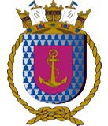

Principais projetos:
- NAVIO AERÓDROMO LIGEIRO MINAS GERAIS (A11)
- Avaliação Operacional do SICONTA Mk-1 (Sistema de Controle Tático) do Centro de Controle e Aproximação (CCA)
- POSTO OCEANOGRÁFICO DA ILHA DA TRINDADE
- Adestramento na operação de sistema de criptografia

- ESTAÇÃO RÁDIO DA MARINHA NO RIO GRANDE
- Projeto, confecção e configuração do primeiro website institucional e estruturação da nova sala do CPD (cabeamento, segurança, preparação do ambiente, climatização, etc)

- DEPÓSITO DE FARDAMENTO DA MARINHA NO RJ
- Montagem da nova estrutura wireless nos galpões de estoque (configuração e instalação das antenas wireless e do cabeamento)

- BASE DE ABASTECIMENTO DA MARINHA NO RJ
- Projeto, confecção, configuração e integração de sistemas do novo website institucional da BAMRJ
- Configuração dos Coletores de Dados e das impressoras de código de barras para acesso wireless nos sistemas dos Depósitos do complexo da BAMRJ

- FRAGATA NITERÓI (F40)
- Montagem, configuração dos sistemas e da rede e distribuição das novas Estações de Trabalho do parque computacional
- Instalação do Sistema “OLIMPO” de controle de entrada e saída a partir de crachás com código de barras e registro em servidor próprio de todos os dados. Orçamento, instalação dos periféricos, instalação e configuração dos sistemas
- Instalação, Configuração e Integração da rede do navio à rede da Base Naval de Aratu (Salvador-BA)
- ESTAÇÃO RADIOGONIOMÉTRICA DA MARINHA NO RIO GRANDE
- Estudo para reestruturação do SPDA (Sistema Proteção Contra Descargas Atmosféricas) do tipo Gaiola de Faraday do Posto de Monitoramento e dos tipos Franklin da ERMRG
- Manutenção e Instalação de nova antena de GPS para posicionamento de referência do sistema de triangulação de sinais
- Manutenção Preventiva e Corretiva de todas as antenas do Parque de Antenas (Interferômetro) do sistema de triangulação (remoção das antenas, manutenção de placas e conectores, lubrificação, etc.
- Manutenção Preventiva e Corretiva do sistema de Supressão de Surto e dos aterramentos das antenas do interferômetro em apoio à VISITEC da empresa ISOFREQ Telecom e Sistemas
- Manutenção Preventiva e Corretiva de todo o sistema de comunicações da Delegacia da Capitania dos Portos em Uruguaiana (antenas e equipamentos das estações fixas e móveis - viaturas e lanchas)
- Projeto e Levantamento de necessidades e orçamentos para reparo ou substituição da Sonda Ionosférica do Sistema de Radiogoniometria